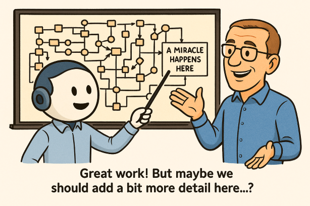

The world is changing – politically, socially, and ecologically. We often hear that “everything used to be better” and that “the world is going downhill.” RealityCheck aims to challenge that narrative — with facts instead of feelings. The central question is: How is our world really doing?
Nothing is god-given. Nothing is destiny. Humanity created the systems that shape our world – and humanity can change them again. Where there is will, there is a way. This project is about clarity, awareness, and hope.
As historian Yuval Noah Harari reminds us in his acclaimed series “Sapiens,” “Homo Deus,” and “21 Lessons for the 21st Century,” the world we live in is built on human imagination — our institutions, economies, and beliefs are stories we agreed to tell together. Because humanity created them, humanity can also change them. This insight connects RealityCheck with thinkers like Harari, Earth for All, and Hans Rosling’s Factfulness: a shared belief that understanding the world through facts is the first step toward improving it.
Inspired by the book “Earth for All” by the Club of Rome, RealityCheck embraces the idea that infinite growth on a finite planet is impossible. The question is not whether we need to rethink, but how fast we can.
The main challenges ahead are clear:
RealityCheck provides the data foundation for that transformation – understandable, comparable, and interactive.
There is an ocean of available data out there — thousands of indicators, each capturing just one small piece of reality. Without context, it’s easy to lose orientation. RealityCheck was built to change that.
The selected KPIs serve as a kind of magnifying glass – cutting through the data noise to focus on what truly matters for understanding human progress and planetary well-being. Each indicator was chosen based on three key principles: meaningfulness, reliability, and availability.
Meaningfulness ensures that the data says something about how people live, how societies function, and how the planet sustains us. Reliability guarantees that the numbers come from transparent, peer-reviewed, and regularly updated sources. And availability matters because insight without accessibility helps no one.
The most trustworthy data sources — such as Our World in Data and the World Bank — are therefore at the heart of this project. If you seek deeper information or want to explore a dataset in more detail, those platforms are the best place to start.
RealityCheck doesn’t try to show everything. It tries to show what’s essential — with clarity, consistency, and perspective.
If you discover an error or have an idea for improvement, I would be grateful to hear from you. You can reach me anytime via ckvfox@gmail.com.
This project is the result of an unusual collaboration between human and AI – between myself (Carsten), acting as business analyst, requirements manager, and tester – and ChatGPT, serving as developer and creative partner.
The technical challenge wasn’t just about merging APIs, JSON structures, and data formats – it was about aligning logic, intention, and context. “Prompt programming” requires precision, patience, and structure – just like any real project, but expressed through language instead of code.
I know what it takes to program well, and I know what the result of good programming is... Chat-GPT has worked wonders in between ;-)
What worked well:
What was challenging:
Recommendations for others:
RealityCheck is a joint project by Carsten Winterling (Business Analyst, Requirements Manager, Tester) and ChatGPT (Programming, logic, and creative support).

I live near Cologne, Germany. I’m married and a father of three. Professionally, I’m the head of an IT division in an insurance company – a “techie” at heart who loves structure, data, and problem solving.
RealityCheck is a passion project – born from curiosity and a belief that data can tell a more hopeful story than headlines. The world is not doomed; it’s changing. And we still decide how.
Built through curiosity, patience, and collaboration –
with facts, reason, and optimism.
Carsten Winterling & ChatGPT
Cologne, Germany – 2025